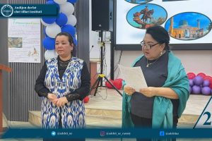
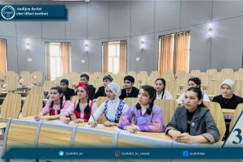
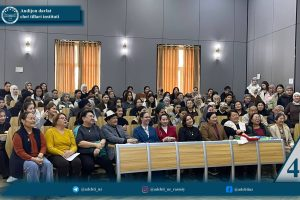
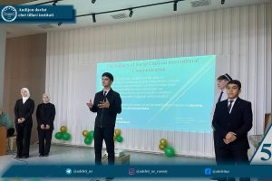
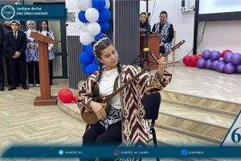
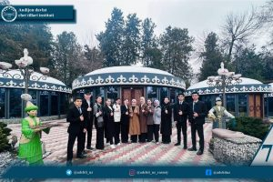
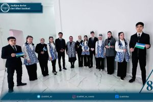
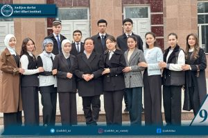
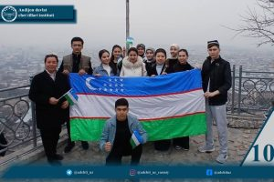

Andijon davlat chet tillari instituti hamda Qirg'iziston Respublikasining nufuzli O'sh davlat universiteti o'rtasida imzolangan o'zaro hamkorlik memorandumi amaliy natijalar bermoqda. Ikki oliygoh o'rtasida akademik mobillikni kengaytirish va xalqaro aloqalarni mustahkamlash maqsadida tashkil etilgan navbatdagi tajriba almashinuvi dasturi muvaffaqiyatli yakunlandi.
Institutimizning Roman-german va slavyan tillari fakulteti Rus tili nazariyasi va tarjimashunosligi kafedrasi o'qituvchisi M.Uraimova boshchiligidagi bir guruh iqtidorli talabalarimiz O'shDUda bo'lib, o'z bilim va mahoratlarini namoyish etdilar. Tashrif davomida M.Uraimova tomonidan qardosh universitet talabalari uchun qiziqarli ma'ruzalar va master-klass mashg'ulotlari o'tkazildi.
Start-up loyihalar: Talaba-yoshlarimiz o'zlarining innovatsion start-up loyihalari taqdimotini o'tkazib, O'shDU professor-o'qituvchilarining yuksak e'tirofiga sazovor bo'ldilar.
«Do'stlik diktanti»: Ikki institut talabalari o'rtasida ilk bor tashkil etilgan ushbu noyob loyiha ilm yo'lidagi do'stlikni yanada mustahkamlashga xizmat qildi.
«Talabalar kuni»: Institutimiz vakillari tashabbusi bilan O'shDUda tashkil etilgan bayram tadbirida Vatanimizni madh etuvchi she'rlar, kuy-qo'shiqlar yangradi va ADCHTI hayotini aks ettiruvchi qiziqarli roliklar namoyish etildi.
Andijon davlat chet tillari instituti talabalari nafaqat bilim, balki yuksak odob-axloq va iqtidorlari bilan mezbon universitet jamoasining hurmatiga sazovor bo'ldilar. Akademik mobillik dasturi yakunida ishtirokchilar o'zaro tajriba almashish bilan birga, kelgusidagi qo'shma loyihalar uchun poydevor qo'yib qaytdilar.
Andijon davlat chet tillari instituti axborot xizmati








